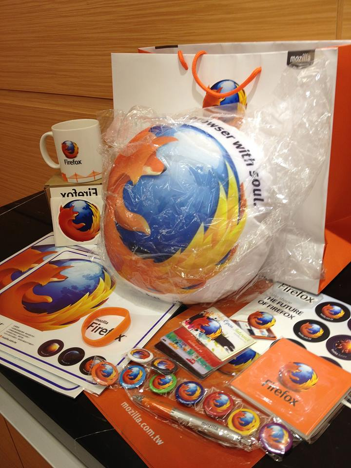

月到中秋人團圓, Mozilla Taiwan 舉辦的臉書粉絲團活動『中秋月圓人團圓, Firefox 線上猜燈謎 』活動圓圓滿滿的結束囉！感謝所有狐迷們在忙著烤肉吃月餅的同時，也參與我們的線上猜燈謎活動。
本次活動的燈謎正解是：我愛火狐
以下是幸運的得獎名單 (活動抽出參加人數的 10%)
幸運中獎者
A大門揚平
Tseng Uhaw
Fox Chen
恭喜在 Facebook 上的獲奬者，請獲奬者在本週日 (9/29) 下午 5 時前寄私信給粉絲團小編，註明您的真實姓名、地址以及 Email，逾時不候哦！再次恭喜所有得獎的狐友們！
Firefox 團圓大禮包
